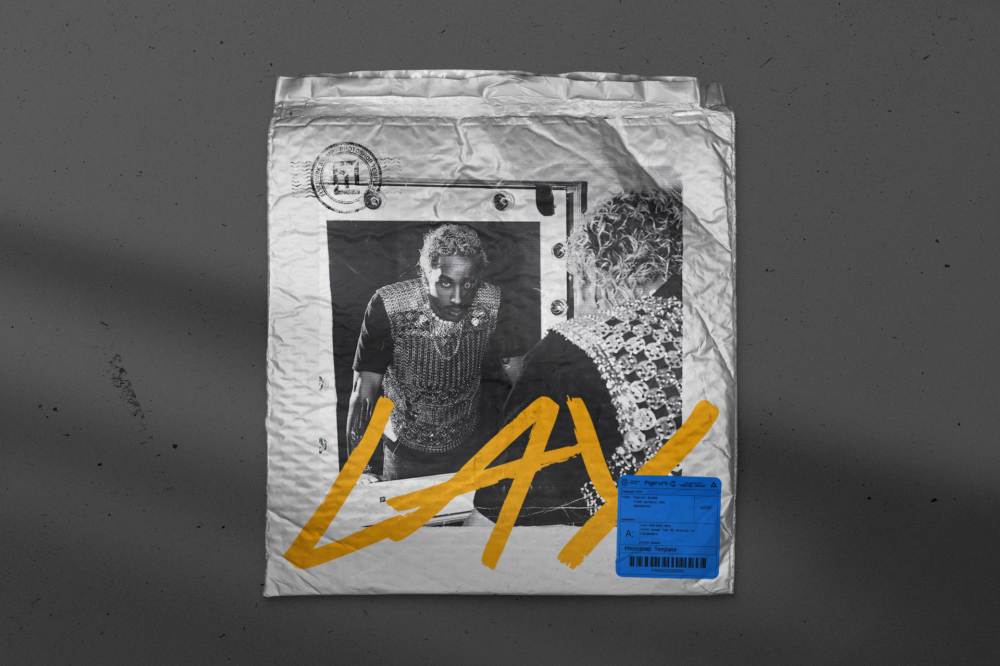
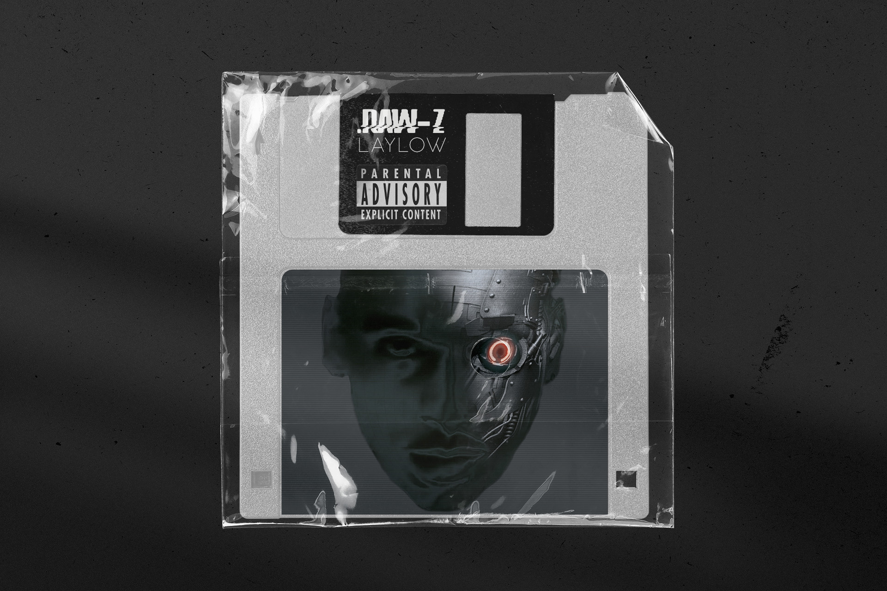
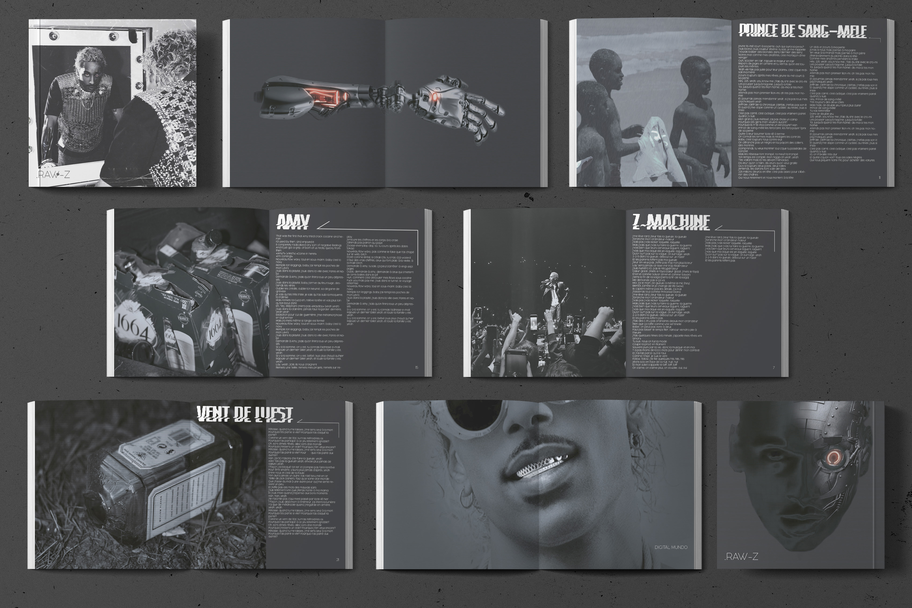
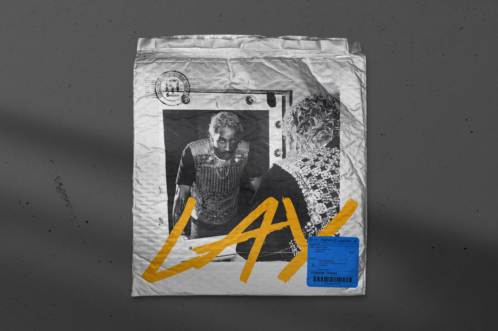
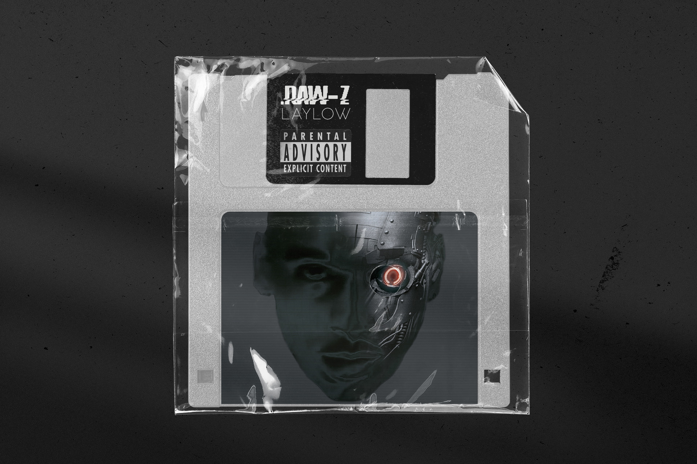
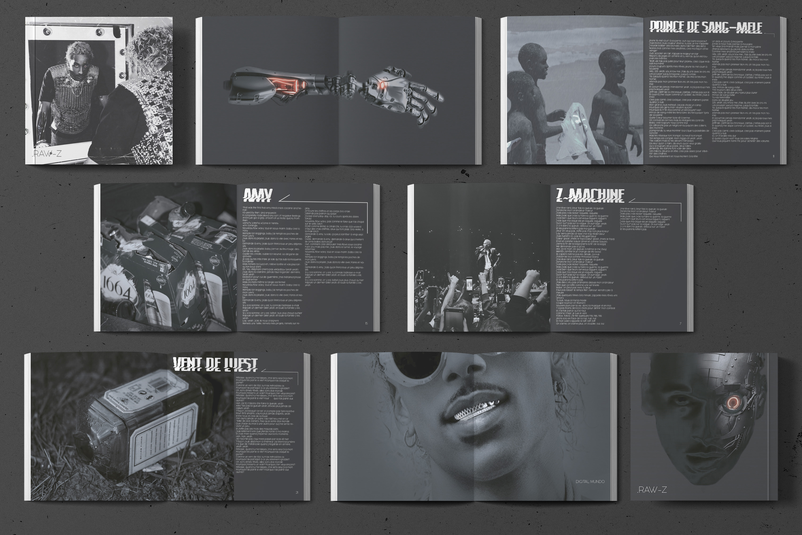

Laylow


 





❮
❯
En création graphique, j'ai recréé la DA d'un album de Laylow :
.Raw-Z.
Je suis partie sur un style sobre, épurée avec une touche de futurisme
caractéristique de Laylow.
J'ai réalisé une cover face avant et arrière d'un vinyle, l'intérieur
et les deux faces du vinyle.
J'ai également fait un livret avec les paroles et des photographies
prises et retouchés par moi.
Vous pouvez le retrouver en intégralité en cliquant
ici
LOGICIEL : Photoshop, Illustrator, InDesign
VOIR LE LIVRET : https://fr.calameo.com/read/00726592327fc3ffa9d40
TAG : #Exprimer